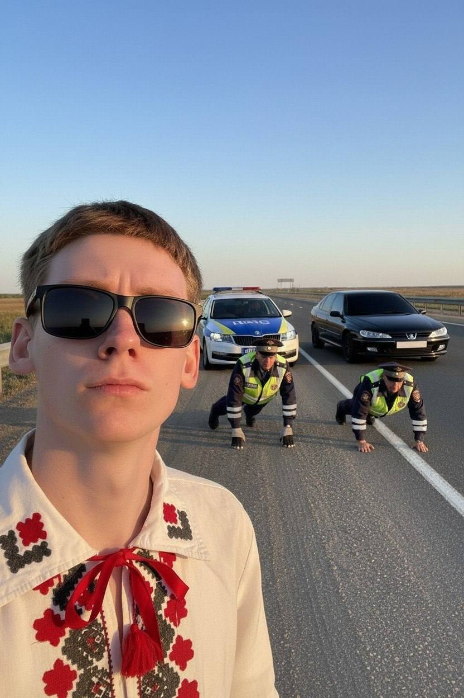

Меня зовут Глеб и я студент в Янках, в целом сказать особо нечего, просто не знаю с чего начать. Родом с города-авиаторов Щучина, про городок сказать нечего, маленький и уютный, но с большими амбициями там не задерживаются.
В целом я человек довольно простой: люблю разбираться в том, как всё устроено, пробовать что-то новое и иногда делать абсолютно бесполезные вещи просто ради интереса.
На этом сайте немного информации про меня, про увлечения, ну и где-то здесь есть секретная ссылка, которая ведет на очень дорогую мне страницу.
| Раздел | Описание |
|---|---|
| Учёба | Учусь в ГрГУ имени Янки Купалы на ФТФ, пока не жалею, всё устраивает, только диванчик бы в 311 поставить с подушкой и телевизором. |
| Интересы | Музыка, баскетбол, игры, автомобили и еще по-мелочи. |
| Характер | Ну вообще не знаю, что сказать, так как человек знает свой характер так, как он считает, со стороны может быть по-другому. |